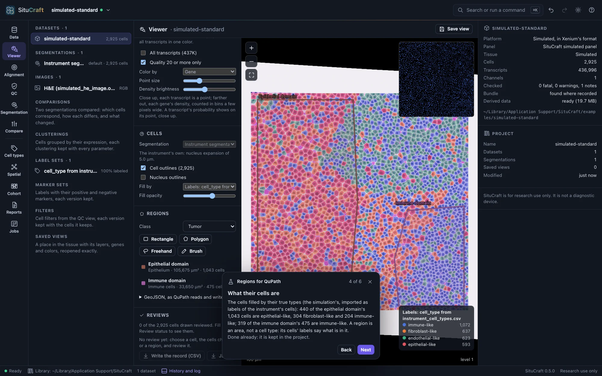
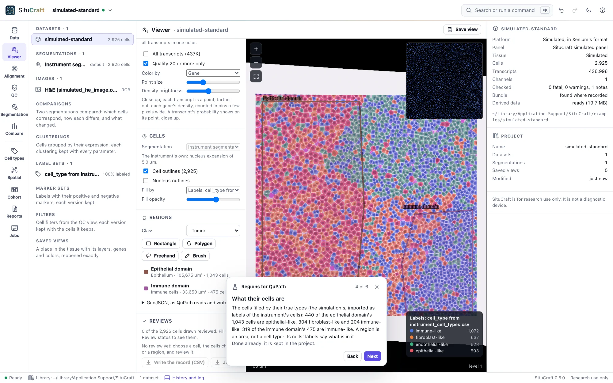
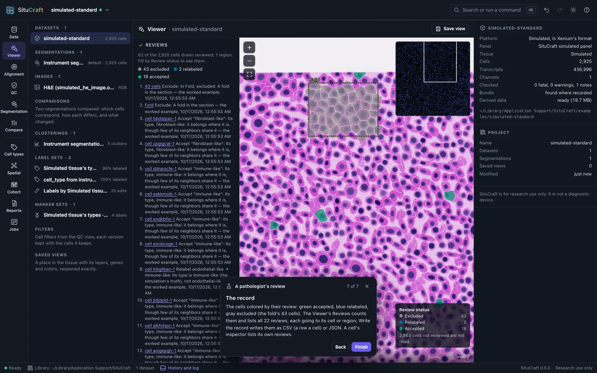
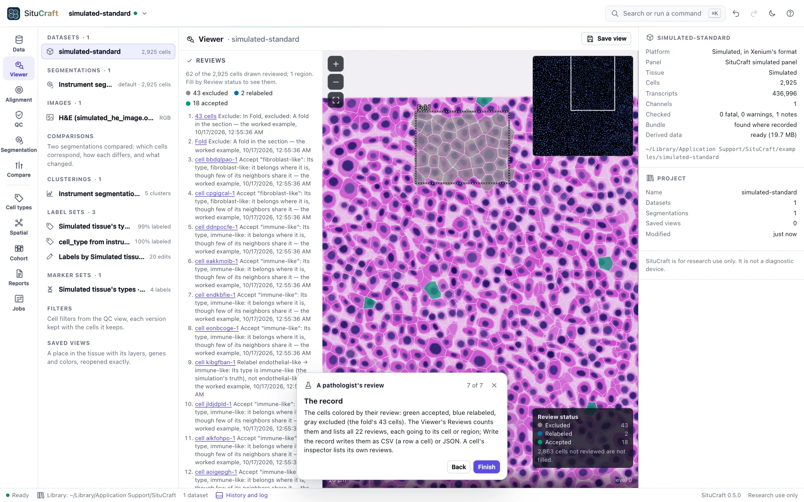

Regions and reviews
Regions mark areas of the tissue: drawn over any layer, kept as versions, and exchanged with QuPath in the pixels of the image you draw on there. Reviews are decisions about cells or regions, kept with who made them, when, and what was on screen.
Drawing regions
The Viewer's Regions draws areas on the tissue, over any layer (the stains, an H&E or an immunofluorescence image): a tumor's invasive front, a stromal band, an area to leave out. Choose a class (QuPath's own: Tumor, Stroma, Immune cells, Necrosis, Other, Region*, Ignore*, or a new one), then a tool:
- Rectangle: drag it.
- Polygon: click its corners; double-click, press Enter or click its first corner to close it; Backspace takes the last corner back.
- Freehand: drag around it.
- Brush: paint it, the brush's size in pixels of the screen (zoom in for a fine edge). With a region chosen, the brush paints onto it, or with Erase takes from it, holes included.


While a tool is chosen the wheel still zooms, holding the space bar pans, and Esc stops drawing. Each region is listed with its class, area and cells: those of the segmentation drawn whose center lies in it. Click one to choose it; double-click to go to it. A region chosen can be renamed, reclassed, gone to, removed, and its cells chosen: Choose its cells chooses the instrument's cells in it, as brushing a plot in the QC view does, and the Viewer, the QC view and the inspector show them.
Versions
Every change is a version of the region, with who made it, when and why: the region chosen lists its versions, and any earlier one can be restored. A region removed is kept with its versions. Regions are kept in the project.
With QuPath
With QuPath. Under GeoJSON, as QuPath reads and writes it, regions are written and read as QuPath writes and reads annotations, in one of:
- µm, the dataset's own coordinates;
- the Xenium image's pixels, as QuPath opens
morphology_focus; - a post-Xenium image's pixels, as QuPath opens that image: through the version of its alignment in use.
To take regions to QuPath, choose the image you will open there (the H&E, say) and Write them all; in QuPath, open that image and import the file's objects. To bring QuPath's annotations here, export them from QuPath as GeoJSON, choose the image they were drawn on, and Read a file…: each annotation becomes a region, with its name, class and color; detections and cells are left out, and how many is reported.
Reviewing cells and regions
A review is a decision about cells or a region, kept with its provenance: who made it, what, the value before and after, when, of which segmentation and label set, each cell's label and its confidence as you saw them, and which version of each post-Xenium image's alignment was in use (and whether the image was shown). Reviews are never changed or removed: taking one back is another.
- Accept a label (or a region's class), or Relabel it, saying why. Relabeling cells adds to a curated set begun from the label set shown (the Viewer then shows it); relabeling a region reclasses it, as a version of it.
- Ambiguous: it could be one of several labels (name them if you can).
- Exclude it from analyses, saying why (a fold, debris, outside the tissue); Include again takes an exclusion back. Excluding a region can exclude the cells in it too.
- Segmentation concern: its segmentation looks wrong (cells merged, a cell split, its boundary off, not a cell, cells missed); Resolve the concern when it is answered.
- Comment: a note, changing nothing.
Review where you look:
- A cell: click it in the Viewer; its inspector shows its label in the label set filling the cells (fill by a label set to review labels) with its confidence, its reviews, and the review buttons.
- Many cells: choose them (brushing a plot in the QC view, or a region's Choose its cells); the Viewer's Reviews reviews them together.
- A region: choose it under Regions; Review it under its details.
- The review queue of the Cell types view (Reviewing labels).


The Viewer's Reviews counts the cells drawn that are accepted, relabeled, ambiguous, excluded, of concern and commented, lists every review (click one to go to its cell or region), and writes the record as CSV (a row for each cell or region reviewed) or JSON. Fill by: Review status colors each cell by its review: excluded gray, a concern vermillion, ambiguous orange, relabeled blue, accepted green, commented purple (a palette apart in every color vision).